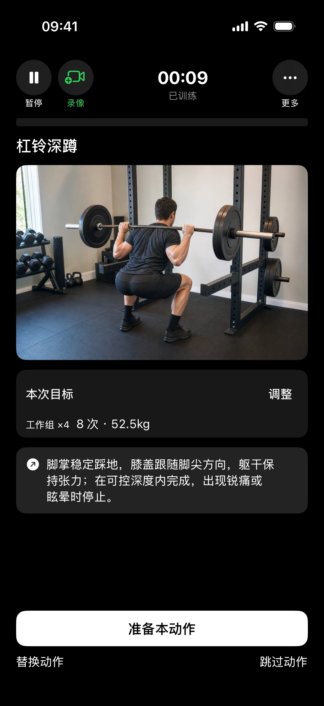
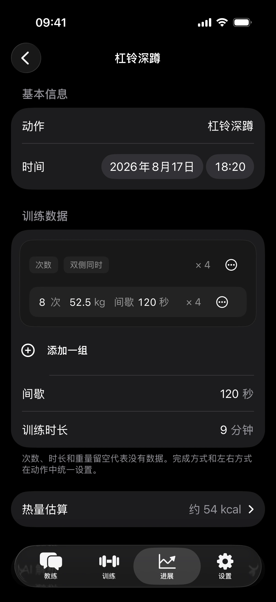
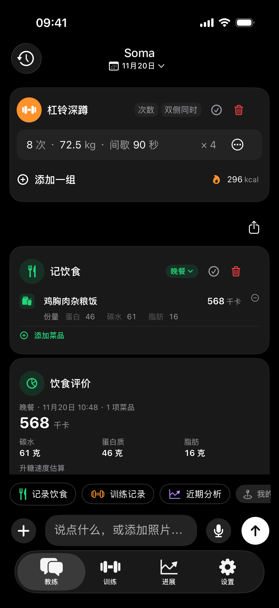
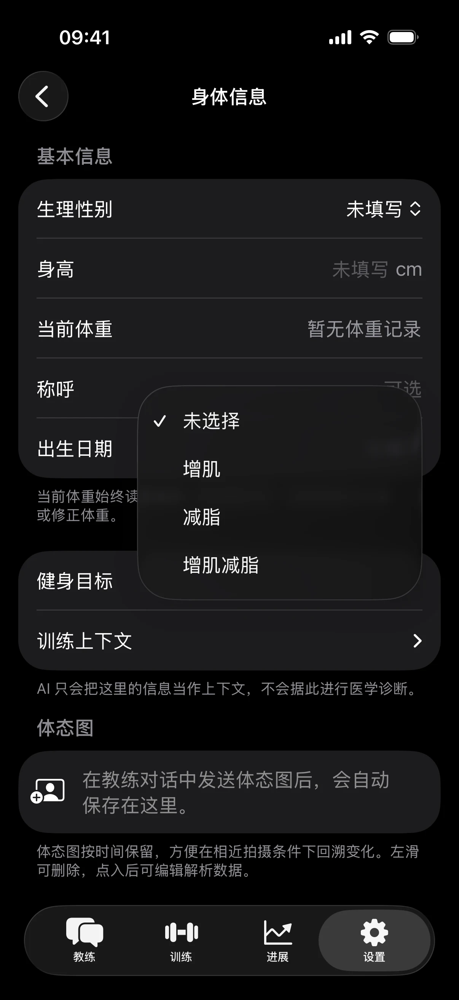
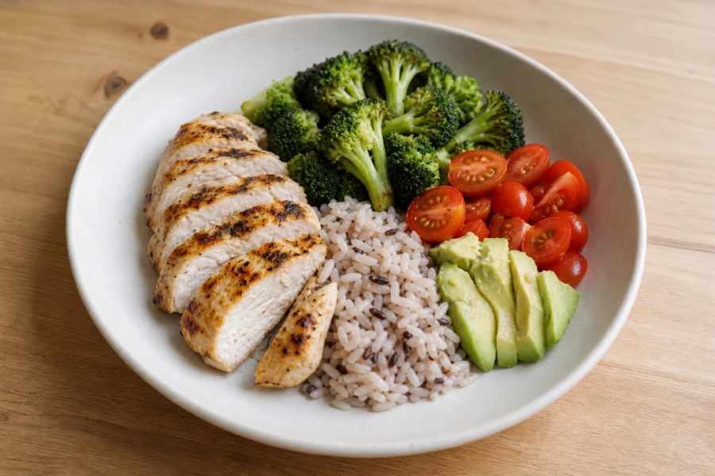
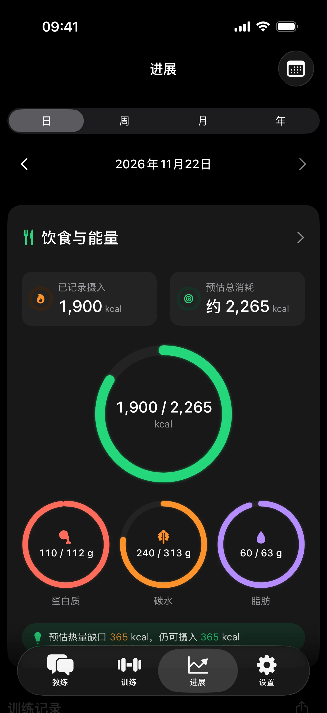
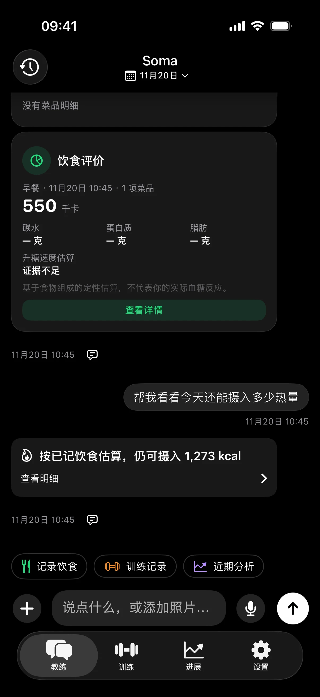
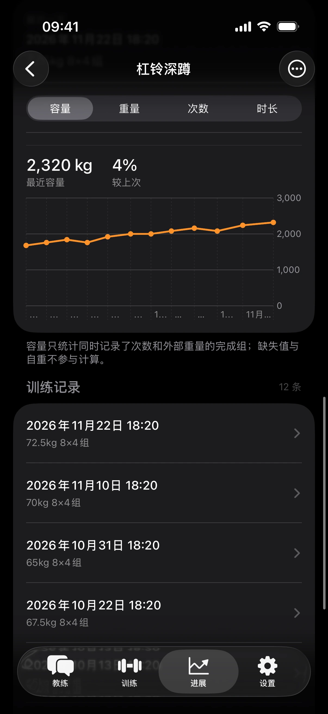
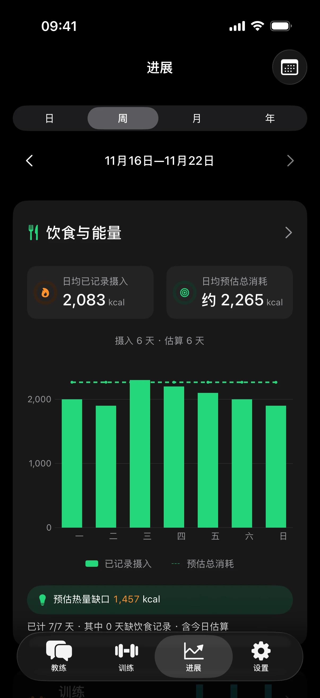

训练
今天练了什么，记下来
到健身房，从「训练」打开今天的课程。Soma 会告诉你下一组做什么、休息多久。已经练完了，也可以回到教练里发条消息。
深蹲练完了，52.5 公斤，4 组，每组 8 次。
Soma 把这条消息和动作库里的杠铃深蹲对上，保存实际组数、次数和重量，算出这次容量 1,680 kg。记错了，打开记录就能改。
下次练深蹲，打开动作历史就能找到今天这一笔。今天这套练得顺，还可以让教练把做过的动作排成一节课，下次直接开练。



定目标
Soma你每次大概能练多久？平时能用到哪些器械？
Soma我先按每周 3 次排一周力量训练。把深蹲放在第一天，你看看这样排合不合适。
Soma你平时练什么？每次能留多少时间？
Soma我先排一周力量训练。吃的先照平时记几天，我们再看哪里适合调整。
教练把计划列出来，你可以改完再保存。要按增肌或减脂看进展，在「设置」的「身体信息」里选健身目标。

训练
到健身房，从「训练」打开今天的课程。Soma 会告诉你下一组做什么、休息多久。已经练完了，也可以回到教练里发条消息。
深蹲练完了，52.5 公斤，4 组，每组 8 次。
Soma 把这条消息和动作库里的杠铃深蹲对上，保存实际组数、次数和重量，算出这次容量 1,680 kg。记错了，打开记录就能改。
下次练深蹲，打开动作历史就能找到今天这一笔。今天这套练得顺，还可以让教练把做过的动作排成一节课，下次直接开练。


饮食
这顿午饭帮我记一下。
Soma 根据照片和你补充的内容，记下这一餐的食物和能估出的营养。比如这碗鸡胸肉糙米饭，记了约 568 千卡和 46 克蛋白质。菜名或份量不对，点开这一餐就能改。
这一餐会计入当天的摄入。晚饭前想知道今天已经吃了多少，问教练，它会用当天已记下的几餐来回答。


教练
课表照着练了一阵，发现重量加不上去，或者忙起来漏了几顿没记。告诉教练发生了什么，它可以先看你已有的记录，再跟你商量下一步。
想看看动作哪里做得不顺，也可以发一段视频给教练，问下一组该留意什么。
漏记的餐可以补上。进展里的摄入和差额会跟着更新，下次再看时也有数可查。
决定了下周要改什么，再去改课程。已经做过的组还在，过一阵再回来比。
Soma下次先用 72.5 公斤，看看四组能不能都做满 8 次。等这个重量做稳了，再试 75。
Soma先把那两顿补上，再一起看这周实际记下的摄入和体重变化。

进展
体重也可以发给教练记，或者从 Apple 健康同步。到「进展」看一周或一个月，把它和训练、饮食放在一起看。
训练记录告诉你练了几天、做了多少。饮食记录加起来是已记摄入，训练消耗也会算进预估总消耗。再对照体重趋势，看看哪一项变了，哪一项还得多看几天。
这 12 次有加重，也有降回去重练的时候。四组都做满 8 次的重量，从 52.5 公斤到了 72.5 公斤。接下来先把 72.5 公斤练稳，再试 75。
把每周有记录的摄入、预估消耗和几周的体重趋势一起看。到了自己定的 72 公斤，再决定要不要改成维持。
杠铃深蹲


这周最后一组还差两次，下周先用原来的重量。练完照样记，看能不能做满，再决定要不要加。
这周有两顿没记，就先补上。下周照样记录训练和吃饭，周末再看体重往哪儿走、要不要调整吃法。
到了目标也可以继续。定下一个训练目标，或者先维持一阵，手上已经有记录可以参考。
回到下一次训练在 Soma 的设置里选模型服务，再填模型和你的 API Key。视频等功能能不能用，要看你选的模型。
把 GitHub 上的源码下载到 Mac，用 Xcode 构建。可以先在 iPhone 模拟器里试试演示空间。装到自己的 iPhone 上，需要 iOS 17 或更新版本，还要用自己的 Apple Developer Team 签名。
支持 iOS 17 及以上，用 Xcode 从源码安装。